微信公众号[深容Pubmed文献检索] 1. 此处右键：选菜单【翻成中文（简体）】 2. 翻译后，此处右键：选菜单【打印...】成PDF格式
建议屏幕分辨率：1920X1080；如果屏幕太小，可以按Ctrl + 或 Ctrl -缩放网页。

Software Construction
Chapter 3: Abstract Data Type (ADT) and
Object-Oriented Programming (OOP)
3.4 Object-Oriented Programming
(OOP)
Xu Hanchuan
xhc@hit.edu.cn
April 3, 2019

Outline
3.4 Object-Oriented Programming (OOP)
1. Criteria of Object-Orientation
2. Basic concepts: object, class, attribute, method, and interface
3. Distinct features of OOP
⚫ Encapsulation and information hiding
⚫ Inheritance and overriding
⚫ Polymorphism, subtyping and overloading
⚫ Static and Dynamic dispatch
⚫ Composition and delegation
4. Some important Object methods in Java
5. To write an immutable class
6. History of OOP
7. Summary

Objective of this lecture
3.4 Object-Oriented Programming (OOP)
▪ Separating the interface of an abstract data type from its
implementation, and using Java interface types to enforce that
separation.
▪ Define ADTs with interfaces, and write classes that implement
interfaces.

Software Construction
1 Criteria of Object-Orientation
3.4 Object-Oriented Programming (OOP)
Criteria of Object-Orientation
▪ An OO programming method / language should have the notion of
class as the central concept. OOP以类为核心概念
▪ The language should make it possible to equip a class and its
features with assertions (preconditions, postconditions and
invariants) and exceptional handling, relying on tools to produce
documentation out of these assertions and, optionally, monitor them
at run time. ADT
– They help produce reliable software;
– They provide systematic documentation;
– They are a central tool for testing and debugging object-oriented software.
▪ Static typing: A well-defined type system should, by enforcing a
number of type declaration and compatibility rules, guarantee the
run-time type safety of the systems it accepts.

Criteria of Object-Orientation
3.4 Object-Oriented Programming (OOP)
▪ Genericity for “ready for change” and “design for/with reuse”: It
should be possible to write classes with formal generic parameters
representing arbitrary types.
▪ Inheritance: It should be possible to define a class as inheriting from
another, to control the resulting potential complexity.
▪ Polymorphism: It should be possible to attach entities (names in the
software texts representing run-time objects) to run-time objects of
various possible types, under the control of the inheritance-based
type system.
▪ Dynamic dispatch/binding: Calling a feature on an entity should
always trigger the feature corresponding to the type of the attached
run-time object, which is not necessarily the same in different
executions of the call.

Software Construction
2 Basic concepts: object, class,
attribute, method and interface

Object
3.4 Object-Oriented Programming (OOP)
▪ Real-world objects share two characteristics: they all have
state and behavior. Identifying the state and behavior for real-
world objects is a great way to begin thinking in terms of object-
oriented programming. 识别现实世界中事物的状态和行为，是开始
OOP的好方法
– Dogs have state (name, color, breed, hungry) and behavior (barking,
fetching, wagging tail).
– Bicycles also have state (current gear, current pedal cadence(踏板节奏),
current speed) and behavior (changing gear, changing pedal cadence,
applying brakes).
▪ For each object that you see, ask yourself two questions, and these
real-world observations all translate into the world of object-
oriented programming.
– What possible states can this object be in? 对象有哪些状态
– What possible behavior can this object perform? 对象有哪些行为
Object
3.4 Object-Oriented Programming (OOP)
▪ An object is a bundle of state and behavior
▪ State – the data contained in the object.
– In Java, these are the fields(字段/属性/成员变量) of the object
▪ Behavior – the actions supported by the object
– In Java, these are called methods
– Method is just OO-speak for function OO中对一般意义上的function称为
mothod
– invoke a method = call a function
3.4 Object-Oriented Programming (OOP)
Classes
Name
Fields
▪ Every object has a class
Methods
– A class defines methods and fields
– Methods and fields collectively known as members 成员变量和成员方法
▪ Class defines both type and implementation
– type ≈ where the object can be used
– implementation ≈ how the object does things
▪ Loosely speaking, the methods of a class are its Application
Programming Interface (API) 类的方法就是其应用程序接口
– Defines how users interact with instances

3.4 Object-Oriented Programming (OOP)
Class example – complex numbers 复数
Class usage example
3.4 Object-Oriented Programming (OOP)
▪ When you run this program, what does it print?
-1.0 + 1.0i
-0.0 + -1.0i

3.4 Object-Oriented Programming (OOP)
Static vs. instance variables/methods of a class
▪ Class variable(Static variable in Java): a variable associated with
the class rather than with an instance of the class. You can also
associate methods with a class--class methods((Static methods in
Java).
– To refer to class variables and methods, you join the class's name and the
name of the class method or class variable together with a period ('.').
▪ Methods and variables that are not class methods or class variables
are known as instance methods and instance variables.
– To refer to instance methods and variables, you must reference the
methods and variables from an instance of the class.
▪ Summary:
– Class variables and class methods are associated with a class and occur
once per class. Using them doesn't require object creation.
– Instance methods and variables occur once per instance of a class.

3.4 Object-Oriented Programming (OOP)
Static vs. instance variables/methods of a class
class DateApp {
public static void main(String args[]) {
Date today = new Date();
System.out.println(today);
}
}
class Another {
public static void main(String[] args) {
int result;
result = Math.min(10, 20);
System.out.println(result);
System.out.println(Math.max(100, 200));
}
}
3.4 Object-Oriented Programming (OOP)
Static vs. instance variables/methods of a class
▪ Static methods are not associated with any particular instance of
a class, while instance methods (declared without the static
keyword) must be called on a particular object.
class Difference {
public static void main(String[] args) {
display(); //calling without object
Difference t = new Difference();
t.show(); //calling using object
}
static void display() {
System.out.println("Programming is amazing.");
}
void show(){
System.out.println("Java is awesome.");
}
}

public class MyStaticMethods{
3.4 Object-Oriented Programming (OOP)
private String name;
private static String staticStr = "STATIC-STRING";
public MyStatic (String n){
this.name = n;
}
public static void testStaticMethod(){
System.out.println(“Hey... I am in static method...”); //you can call static variables here,but
System.out.println(MyStaticMethods.staticStr); //you can not call instance variables here!??
}
静态方法无法调用非静态成员（方法和变量）
public void testObjectMethod(){
System.out.println("Hey i am in non-static method");//you can also call static variables here
System.out.println(MyStaticMethods.staticStr); //you can call instance variables here
System.out.println("Name: "+this.name);
}
public static void main(String a[]){
//By using class name, you can call static method
MyStatic.testStaticMethod();
MyStatic msm = new MyStatic ("Java2novice");
msm.testObjectMethod();
}
}

Software Construction
3 Interface
Interface
3.4 Object-Oriented Programming (OOP)
▪ Java’s interface is a useful language mechanism for designing and
expressing an ADT, with its implementation as a class
implementing that interface.
– An interface in Java is a list of method signatures, but no method bodies.
– A class implements an interface if it declares the interface in its
implements clause, and provides method bodies for all of the interface’s
methods.
– An interface can extend one or more others 一个接口可以扩展其他接口
– A class can implement multiple interfaces 一个类可以实现多个接口
3.4 Object-Oriented Programming (OOP)
Interfaces and implementations
▪ Multiple implementations of API can coexist
– Multiple classes can implement the same API
– They can differ in performance and behavior,
▪ In Java, an API is specified by interface or class
– Interface provides only an API
– An interface defines but does not implement API
– Class provides an API and an implementation
– A Class can implement multiple interfaces

3.4 Object-Oriented Programming (OOP)
An interface to go with the example class
3.4 Object-Oriented Programming (OOP)
Modifying class to use interface
3.4 Object-Oriented Programming (OOP)
Modifying client to use interface

3.4 Object-Oriented Programming (OOP)
Interface permits multiple implementations
3.4 Object-Oriented Programming (OOP)
Interface decouples client from implementation
Java interfaces and classes
3.4 Object-Oriented Programming (OOP)
▪ Interfaces vs. classes
– Interface: specifies expectations
– Class: delivers on expectations (the implementation)
▪ Classes do define types
– Public class methods usable like interface methods
– Public fields directly accessible from other classes
▪ But prefer the use of interfaces
– Use interface types for variables and parameters unless you know one
implementation will suffice.
– Supports change of implementation;
– Prevents dependence on implementation details
3.4 Object-Oriented Programming (OOP)
Another interface example: MyString

3.4 Object-Oriented Programming (OOP)
Implementation 1 of MyString
避免通过new创造对象
3.4 Object-Oriented Programming (OOP)
Implementation 2 of MyString

3.4 Object-Oriented Programming (OOP)
To use MyString and its implementations
▪ Problem: breaks the abstraction barrier 一定程度上破坏了抽象
– Clients must know the name of the concrete representation class.
– Because interfaces in Java cannot contain constructors, they must directly
call one of the concrete class’ constructors. 接口不能有构造方法，所以创
建对象时需要调用某个具体实现的构造方法
– The spec of that constructor won’t appear anywhere in the interface, so
there’s no static guarantee that different implementations will even
provide the same constructors.
3.4 Object-Oriented Programming (OOP)
Using static factory instead of constructor
▪ From Java 8，interfaces are allowed to contain static methods, so
we can implement the creator operation valueOf as a static factory
method in the interface MyString:

3.4 Object-Oriented Programming (OOP)
Using static factory instead of constructor
▪ Hiding the implementation completely is a tradeoff, because
sometimes the client wants a choice of implementations with
different characteristics. 是否完全隐藏实现需要进行权衡
▪ That’s why ArrayList and LinkedList are exposed by the Java
library, because they vary in performance of operations like get()
and insert().

Advantages of interface
3.4 Object-Oriented Programming (OOP)
▪ Interface specifies the contract for the client and nothing more.
– The interface is all a client programmer needs to read to understand the
ADT. 调用者理解ADT时只需要理解接口即可
– The client can’t create inadvertent dependencies on the ADT’s rep,
because instance variables can’t be put in an interface at all. 调用者不能在
ADT的表示上创建无意的依赖
– The implementation is kept well and truly separated, in a different class
altogether. 不同实现可以在不同的类中
▪ Multiple different representations of the abstract data type can co-
exist in the same program, as different classes implementing the
interface. 抽象数据类型的多个不同表示可以共存于同一个程序中，
作为实现接口的不同类。
– When an abstract data type is represented just as a single class, without an
interface, it’s harder to have multiple representations.

3.4 Object-Oriented Programming (OOP)
Why multiple implementations?
▪ Different performance
– Choose implementation that works best for your use
▪ Different behavior
– Choose implementation that does what you want
– Behavior must comply with interface spec (“contract”)
▪ Often performance and behavior both vary
– Provides a functionality – performance tradeoff
– Example: HashSet, TreeSet
Summary of Interface
3.4 Object-Oriented Programming (OOP)
▪ Documentation for both the compiler and for humans
– Not only does an interface help the compiler catch ADT implementation
bugs, but it is also much more useful for a human to read than the code for
a concrete implementation. Such an implementation intersperses ADT-
level types and specs with implementation details. 有助于编译器帮助检查
ADT实习中的bug，也有助于用户脱离代码理解方法
▪ Allowing performance trade-offs
– Different implementations of the ADT can provide methods with very
different performance characteristics. Different applications may work
better with different choices, but we would like to code these applications
in a way that is representation-independent. From a correctness
standpoint, it should be possible to drop in any new implementation of a
key ADT with simple, localized code changes.可以根据需求选择合适的实
现，实现性能的折中
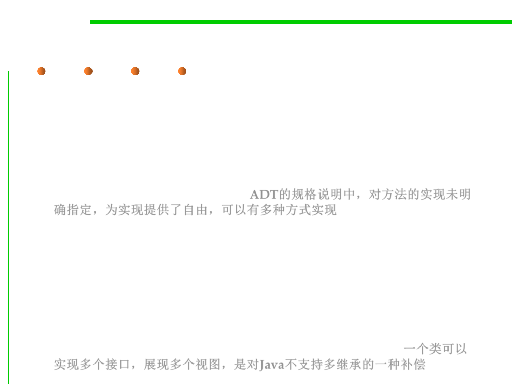
Summary of Interface
3.4 Object-Oriented Programming (OOP)
▪ Methods with intentionally underdetermined specifications
– An ADT for finite sets could leave unspecified the element order one gets
when converting to a list. Some implementations might use slower
method implementations that manage to keep the set representation in
some sorted order, allowing quick conversion to a sorted list. Other
implementations might make many methods faster by not bothering to
support conversion to sorted lists. ADT的规格说明中，对方法的实现未明
确指定，为实现提供了自由，可以有多种方式实现
▪ Multiple views of one class
– A Java class may implement multiple interfaces. For instance, a user
interface widget displaying a drop-down list is natural to view as both a
widget and a list. The class for this widget could implement both
interfaces. In other words, we don’t implement an ADT multiple times just
because we are choosing different data structures; we may make multiple
implementations because many different sorts of objects may also be seen
as special cases of the ADT, among other useful perspectives. 一个类可以
实现多个接口，展现多个视图，是对Java不支持多继承的一种补偿
 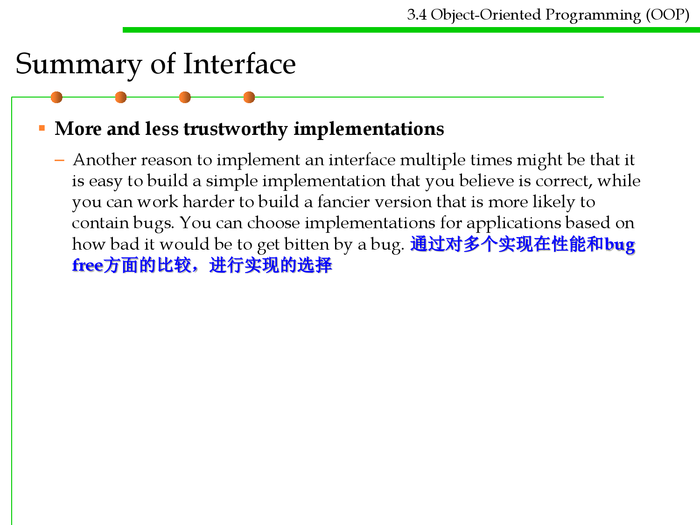
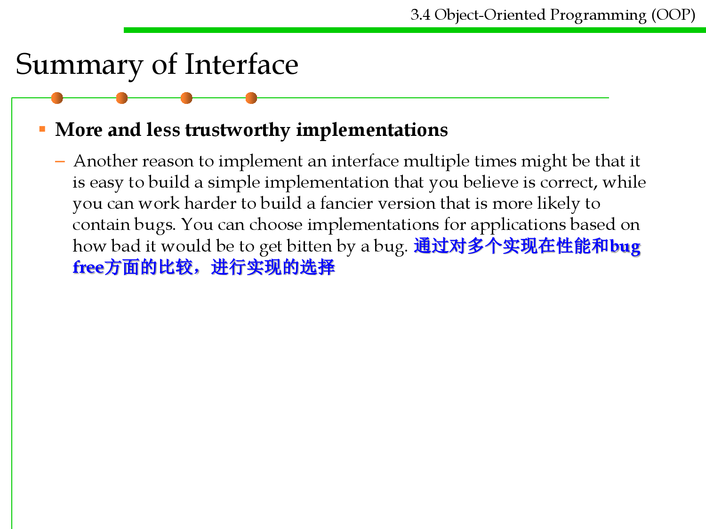
Summary of Interface
3.4 Object-Oriented Programming (OOP)
▪ More and less trustworthy implementations
– Another reason to implement an interface multiple times might be that it
is easy to build a simple implementation that you believe is correct, while
you can work harder to build a fancier version that is more likely to
contain bugs. You can choose implementations for applications based on
how bad it would be to get bitten by a bug. 通过对多个实现在性能和bug
free方面的比较，进行实现的选择

Software Construction
4 Encapsulation and information
hiding

Information hiding
3.4 Object-Oriented Programming (OOP)
▪ Single most important factor that distinguishes a well-designed
module from a bad one is the degree to which it hides internal data
and other implementation details from other modules 内部数据和
实现细节的隐藏程度是模块化设计质量评价的最重要标准
▪ Well-designed code hides all implementation details
– Cleanly separates API from implementation API同实现分离
– Modules communicate only through APIs 模块间只通过API通讯
– They are oblivious(不知道的) to each others’ inner workings
▪ Known as information hiding or encapsulation, a fundamental
tenet(原则) of software design.

3.4 Object-Oriented Programming (OOP)
Benefits of information hiding
▪ Decouples the classes that comprise a system
– Allows them to be developed, tested, optimized, used, understood, and
modified in isolation
▪ Speeds up system development
– Classes can be developed in parallel
▪ Eases burden of maintenance
– Classes can be understood more quickly and debugged with little fear of
harming other modules
▪ Enables effective performance tuning
– “Hot” classes can be optimized in isolation
▪ Increases software reuse
– Loosely-coupled classes often prove useful in other contexts

3.4 Object-Oriented Programming (OOP)
Information hiding with interfaces
▪ Declare variables using interface type
▪ Client can use only interface methods
▪ Fields not accessible from client code
▪ But this only takes us so far
– Client can access non-interface members directly
– In essence, it’s voluntary information hiding

3.4 Object-Oriented Programming (OOP)
Visibility modifiers for members
▪ private – Accessible only from declaring class
▪ protected – Accessible from subclasses of declaring class (and
within package)
▪ public – Accessible from anywhere
3.4 Object-Oriented Programming (OOP)
Visibility modifiers for members
3.4 Object-Oriented Programming (OOP)
Best practices for information hiding
▪ Carefully design your API
▪ Provide only functionality required by clients, and all other
members should be private
▪ You can always make a private member public later without
breaking clients 可以在不妨碍调用者的情况下，在后期将私有变为
公有
– But not vice-versa! 不能进行相反操作，会破坏调用者的使用

Software Construction
5 Inheritance and Overriding
Inheritance
3.4 Object-Oriented Programming (OOP)
▪ Inheritance is for code reuse
Class A extends B
– Write code once and only once
– Superclass features(public, protected) implicitly available in subclass
Animal
Cat

Software Construction
(1) Overriding（覆盖/重写)
Overriding (覆盖/重写)
3.4 Object-Oriented Programming (OOP)
▪ Method overriding is a language feature that allows a subclass or
child class to provide a specific implementation of a method that is
already provided by one of its superclasses or parent classes. 子类
可以重新实现父类中的方法
– The implementation in the subclass overrides (replaces) the
implementation in the superclass by providing a method that has same
name, same parameters or signature, and same
return type as the method in the parent class.
– The version of a method that is executed will be
determined by the object that is used to invoke it.
– If an object of a parent class is used to invoke the
method, then the version in the parent class will be
executed, but if an object of the subclass is used to
invoke the method, then the version in the child
class will be executed.
– 根据调用时的对象类型决定被调用方法的版本
3.4 Object-Oriented Programming (OOP)
Rewriteable Methods and Strict Inheritance
▪ Rewriteable Method: A method which allow a re-implementation.
– In Java methods are rewriteable by default, i.e. there is no special
keyword. 默认父类中的方法均是可被重写的
▪ Strict inheritance
– The subclass can only add new methods to the superclass, it cannot
overwrite them 只能继承，不能重写
– If a method cannot be overwritten in a Java program, it must be prefixed
with the keyword final.

Strict Inheritance
3.4 Object-Oriented Programming (OOP)
Car
drive()
brake()
accelerate()
LuxuryCar
playMusic()
ejectCD()
resumeMusic()
pauseMusic()
▪ Superclass
public class Car {
public final void drive() {…}
public final void brake() {…}
public final void accelerate() {…}
}
▪ Subclass
public class LuxuryCar extends Car {
public void playMusic() {…}
public void ejectCD() {…}
public void resumeMusic() {…}
public void pauseMusic() {…}
}

3.4 Object-Oriented Programming (OOP)
Strict Inheritance and Rewriteable Methods
class Device {
int serialnr;
help() not
overwritable
public final void help() {….}
public void setSerialNr(int n) {
serialnr = n;
}
}
setSerialNr()
class Valve extends Device {
overwritable
Position s;
public void setSerialNr(int n) {
serialnr = n + s.serialnr;
}
public void on() {
….
}
}

3.4 Object-Oriented Programming (OOP)
Rewriteable Methods are set to empty
class Device {
int serialnr;
public void setSerialNr(int n) {}
}
class Valve extends Device {
Position s;
public void on() {
…..
}
I expect that the method
setSerialNr() will be
overwritten. I only write
an empty body(called
stub)
public void setSerialNr(int n) {
seriennr = n + s.serialnr;
}
} // class Valve
Overwriting of the method
setSerialNr() of Class
Device
Overriding (覆盖/重写)
3.4 Object-Oriented Programming (OOP)
▪ When a subclass contains a method that overrides a method of the
superclass, it can also invoke the superclass method by using the
keyword super. 子类中可以通过super关键字调用父类中被重写的方法

Extended reuse with super
3.4 Object-Oriented Programming (OOP)
3.4 Object-Oriented Programming (OOP)
Constructors with this and super
调用父类的构造方
法时，必须是构造
方法的第一行

3.4 Object-Oriented Programming (OOP)
Bad Use of Overriding Methods
▪ One can overwrite the operations of a superclass with completely
new meanings.
▪ Example:
Public class SuperClass {
public int add (int a, int b) { return a+b; }
public int subtract (int a, int b) { return a-b; }
}
Public class SubClass extends SuperClass {
public int add (int a, int b) { return a-b; }
public int subtract (int a, int b) { return a+b; }
}
▪ We have redefined addition as subtraction and subtraction as
addition!!

final
3.4 Object-Oriented Programming (OOP)
▪ A final field: prevents reassignment to the field after initialization
▪ A final method: prevents overriding the method
▪ A final class: prevents extending the class
– e.g., public final class CheckingAccountImpl { …

3.4 Object-Oriented Programming (OOP)
Tips for overriding a method
▪ If you want to override a method:
– Make sure signatures match 签名保持一致
– Use @Override so compiler has your back(compiler 会检查覆盖方法和被
覆盖的方法签名是否完全一致)
– Do copy-and-paste declarations (or let IDE do it for you)
– The visibility can keep the same or increased, but not reduced.
class Book{
protected int getPrice(){
return 30;
}
}
public class ComputerBook extends Book{
int getPrice(){ return 10 } //error
}

Software Construction
(2) Abstract Class

3.4 Object-Oriented Programming (OOP)
Abstract Methods and Abstract Classes
▪ Abstract method:
– A method with a signature but without an implementation (also called
abstract operation) 只有定义没有实现
– Defined by the keyword abstract
▪ Abstract class:
– A class which contains at least one abstract method is called abstract class
– It cannot be instantiated! 抽象类不能实例化
– Before a class derived from an abstract class can be instantiated, all
abstract methods of its parent classes must be implemented by some class
in the derivation chain. 继承某个抽象类的子类在实例化时，所有父类中的
抽象方法必须已经实现

3.4 Object-Oriented Programming (OOP)
Abstract Methods and Abstract Classes
▪ Interface: An abstract class which has only abstract methods
– An interface is primarily used for the specification of a system or
subsystem. The implementation is provided by a subclass or by other
mechanisms.
▪ Concrete class → Abstract Class → Interface

Software Construction
6 Polymorphism, subtyping and
overloading

Software Construction
(1) Three Types of Polymorphism

3.4 Object-Oriented Programming (OOP)
Three Types of Polymorphism (多态)
▪ Polymorphism is the provision of a single interface to entities of
different types or the use of a single symbol to represent multiple
different types 多态性是指为不同类型的实体提供一个接口，或者使
用一个符号来表示多个不同的类型。
– Ad hoc polymorphism: when a function denotes different and potentially
heterogeneous(异构的) implementations depending on a limited range of
individually specified types and combinations. Ad hoc polymorphism is
supported in many languages using function overloading. 一个函数可以
有多个同名的实现(方法重载)
– Parametric polymorphism 参数多态性: when code is written without
mention of any specific type and thus can be used transparently with any
number of new types. In the object-oriented programming community,
this is often known as generics or generic programming. 一个类型名字可
以代表多个类型(泛型编程)
– Subtyping (also called subtype polymorphism or inclusion
polymorphism): when a name denotes instances of many different classes
related by some common superclass 一个变量名字可以代表多个类的实例(
子类型)

Software Construction
(2) Ad hoc polymorphism and
Overloading
Ad hoc polymorphism
3.4 Object-Oriented Programming (OOP)
▪ Ad-hoc polymorphism is obtained when a function works on
several different types (which may not exhibit a common structure)
and may behave in unrelated ways for each type.
public class OverloadExample {
public static void main(String args[]) {
System.out.println(add("C","D"));
System.out.println(add("C","D","E"));
System.out.println(add(2,3));
}
public static String add(String c, String d) {
return c.concat(d);
}
public static String add(String c, String d, String e){
return c.concat(d).concat(e);
}
public static int add(int a, int b) {
return a+b;
}
}


Overloading 重载
3.4 Object-Oriented Programming (OOP)
▪ Overloaded methods let you reuse the same method name in a
class, but with different arguments (and optionally, a different
return type). 重载是指在一个类中存在多个同名函数，必须具有不同的参数
列表，返回值类型可同可不同
– Overloading a method often means you‘re being a little nicer to those who
call your methods, because your code takes on the burden of coping with
different argument types rather than forcing the caller to do conversions
prior to invoking your method. 重载为调用者带来了方便(便于记忆同类方
法的名字)
▪ A method Print(object O):one might like the method to be
different when printing, for example, text or pictures.
– Two different methods may be overloaded as Print(text_object T);
Print(image_object P).
– If we write the overloaded print methods for all objects our program will
"print", we never have to worry about the type of the object, and the
correct function call again, the call is always: Print(something).

Overloading
3.4 Object-Oriented Programming (OOP)
▪ Function overloading is the ability to create multiple methods of the
same name with different implementations.
– Calls to an overloaded function will run a specific implementation of that
function appropriate to the context of the call, allowing one function call
to perform different tasks depending on context. 可以根据需要选择方法的
实现
▪ Overloading is a static polymorphism
– A function call is resolved using the ‘best match technique’, i.e. the
function is resolved depending upon the argument list. 静态的多态，通过
参数列表决定依赖哪个实现
– Static type checking in function calls
– The determination of which of these methods are used is resolved at
compile time. 在编译时决定调用哪个方法
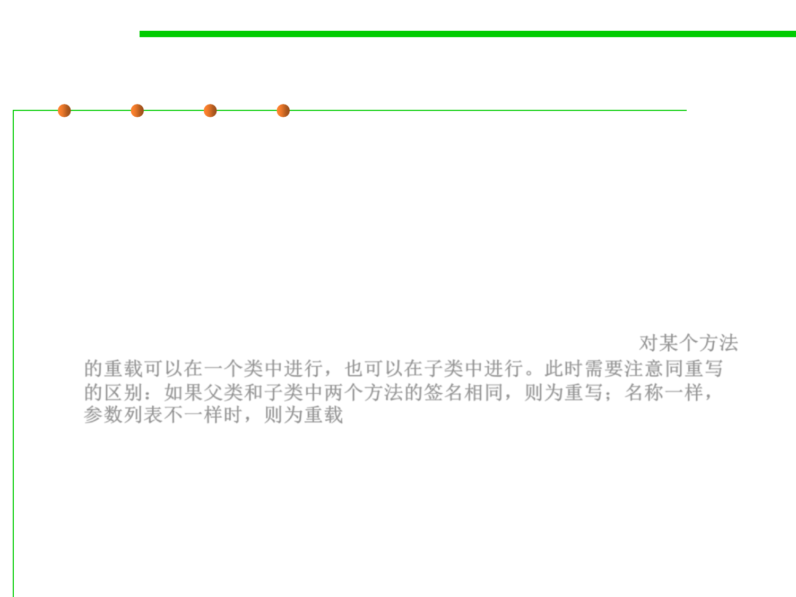
Overloading rules
3.4 Object-Oriented Programming (OOP)
▪ Rules in function overloading: the overloaded function must differ
either by the arity(参数数量) or data types
– Overloaded methods MUST change the argument list.
– Overloaded methods CAN change the return type.
– Overloaded methods CAN change the access modifier.
– Overloaded methods CAN declare new or broader checked exceptions.
– A method can be overloaded in the same class or in a subclass. 对某个方法
的重载可以在一个类中进行，也可以在子类中进行。此时需要注意同重写
的区别：如果父类和子类中两个方法的签名相同，则为重写；名称一样，
参数列表不一样时，则为重载

Legal Overloads
3.4 Object-Oriented Programming (OOP)
public void changeSize(int size,
String name, float pattern) { }
▪ The following methods are legal overloads of the changeSize()
method:
– public void changeSize(int size, String name) { }
– public int changeSize(int size, float pattern) { }
▪ How about these three?
– public void changeSize(int size,
String name, double pattern){ }
– public void changeSize(int size,
changeSize(10,”test”,0)
String name, int pattern){ } changeSize(10,”test”,0.0)
Which ones will run?
– public void changeSize(int size,
String name, Integer pattern){ }

3.4 Object-Oriented Programming (OOP)
Invoking overloaded methods
public class Adder {
public int addThem(int x, int y) {
return x + y;
}
public double addThem(double x,
double y) {
return x + y;
}
}
public class TestAdder {
public static void main (String [] args) {
Adder a = new Adder();
int b = 27;
int c = 3;
// Which addThem is invoked?
int result = a.addThem(b,c);
double doubleResult = a.addThem(22.5,9.3);
System.out.println (result);
System.out.println (doubleResult);
}
}

3.4 Object-Oriented Programming (OOP)
Invoking overloaded methods
class Animal {
public void eat() {}
}
public class TestUseAnimals {
public static void main (String [] args) {
UseAnimals ua = new UseAnimals();
class Horse extends Animal {
public void eat(String food) {}
}
Animal animalobj = new Animal();
Horse horseobj = new Horse();
public class UseAnimals {
public void doStuff(Animal a) {
System.out.println("Animal");
}
public void doStuff(Horse h) {
System.out.println("Horse");
}
Animal animalRefToHorse = new Horse();
ua.doStuff(animalobj);
Animal
ua.doStuff(horseobj);
Horse
ua.doStuff(animalRefToHorse); Animal
}
}
}
Which overridden version of the method to call is
decided at runtime based on object type, but which
overloaded version of the method to call is based on the
reference type of the argument passed at compile time.
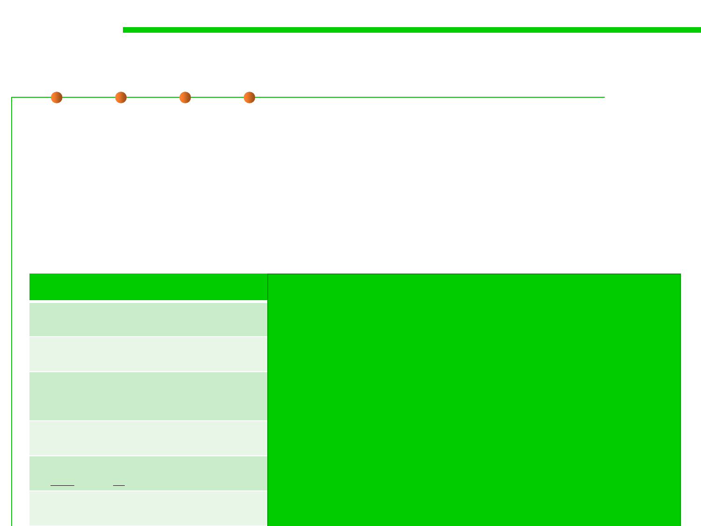
3.4 Object-Oriented Programming (OOP)
Invoking overloaded methods
class Animal {
public void eat()
{System.out.println("I'm an animal. I like eating everything!");}
}
class Horse extends Animal {
public void eat(String food)
{System.out.println("I'm a horse. I like eating "+ food);}
public void eat()
{System.out.println(“I‘m a horse. I like eating grass！"}
}
Method Invocation Code
Result
Animal a = new Animal();
a.eat();
Horse h = new Horse();
h.eat();
Animal ah = new Horse();
ah.eat();
Horse he = new Horse();
he.eat("Apples!");
Animal a2 = new Animal();
a2.eat("Carrots");
Animal ah2 = new Horse();
ah2.eat("Carrots");
I'm an animal. I like eating everything!
I'm a horse. I like eating grass!
I'm a horse. I like eating grass!
Polymorphism works- the actual object type(Horse), not the reference
type(Animal), is used to determine which eat() is called.
I'm a horse. I like eating Apples!
The overloaded eat(String s) method in Horse is invoked.
Compiler error! Animal class doesn’t have an eat() method that takes a
String
Compiler error! Compiler still looks only at the reference, and sees that
Animal doesn’t have an eat() method that takes a String.
3.4 Object-Oriented Programming (OOP)
Invoking overloaded methods
class Animal {
public void eat()
{System.out.println("I'm an animal. I like eating everything!");}
}
class Horse extends Animal {
public void eat(String food)
{System.out.println("I'm a horse. I like eating "+ food);}
public void eat()
{System.out.println(“I‘m a horse. I like eating grass！"}
}
Method Invocation Code
Result
Animal a = new Animal();
a.eat();
Horse h = new Horse();
h.eat();
Animal ah = new Horse();
ah.eat();
Horse he = new Horse();
he.eat("Apples!");
Animal a2 = new Animal();
a2.eat("Carrots");
Animal ah2 = new Horse();
ah2.eat("Carrots");
I'm an animal. I like eating everything!
I'm a horse. I like eating grass!
I'm a horse. I like eating grass!
Polymorphism works- the actual object type(Horse), not the reference
type(Animal), is used to determine which eat() is called.
I'm a horse. I like eating Apples!
The overloaded eat(String s) method in Horse is invoked.
Compiler error! Animal class doesn’t have an eat() method that takes a
String
Compiler error! Compiler still looks only at the reference, and sees that
Animal doesn’t have an eat() method that takes a String.

Check your understanding
3.4 Object-Oriented Programming (OOP)
▪ What will happen?

3.4 Object-Oriented Programming (OOP)
Overriding vs. Overloading
public class Test {
public static void main(String[] args) {
A a = new A();
a.p(10);
}
}
class B {
public void p(int i) {
}
}
class A extends B {
// This method overrides the method in B
public void p(int i) {
System.out.println(i);
}
}
public class Test {
public static void main(String[] args) {
A a = new A();
a.p(10);
}
}
class B {
public void p(int i) {
}
}
class A extends B {
// This method overloads the method in B
public void p(double i) {
System.out.println(i);
}
}
The method p(int i) in class A
overrides the same method defines
in class B.
The method p(int i) in class A
overloads the same method defines
in class B.
3.4 Object-Oriented Programming (OOP)
Overriding vs. Overloading
▪ Do not confuse overriding a method in a derived class(派生类) with
overloading a method name
– When a method is overridden, the new method definition given in the
derived class has the exact same number and types of parameters as in the
base class 重写时父类和子类中的方法具有相同的签名
– When a method in a derived class has a different signature from the
method in the base class, that is overloading 签名不同时则为重载
– Note that when the derived class overloads the original method, it still
inherits the original method from the base class as well 子类重载了父类的
方法后，子类仍然继承了被重载的方法

3.4 Object-Oriented Programming (OOP)
Overriding vs. Overloading
Argument list
Return type
Exceptions
Access
Invocation
Overloading
Must change
Can Change
Can Change
Can Change
Reference type determines which overloaded
version (based on declared argument types)
is selected. Happens at compile time. The
actual method that's invoked is still a virtual
method invocation that happens at runtime,
but the compiler will always know the
signature of the method that is to be
invoked. So at runtime, the argument match
will have already been nailed down, just not
the actual class in which the method lives
Overriding
Must not change
Not change or subtype
Can reduce or eliminate
Must not throw new or
broader checked exception
Must not make more
restrictive (can be less
restrictive)
Object type (in other
words, the type of the
actual instance on the
heap) determines which
method is selected
Happens at runtime.

Software Construction
(3) Parametric polymorphism and
Generic programming

Parametric polymorphism
3.4 Object-Oriented Programming (OOP)
▪ Parametric polymorphism is obtained when a function works
uniformly on a range of types; these types normally exhibit some
common structure. 参数多态性是指方法针对多种类型时具有同样的行为
（这里的多种类型具有通用的结构），此时可使用统一的类型表达多种类型
– It’s the ability to define functions and types in a generic way so that it
works based on the parameter passed at runtime, i.e., allowing static type-
checking without fully specifying the type. 在运行时根据具体指定类型确定(编
译成class文件时，会用指定类型替换类型变量)
– This is what is called “Generics (泛型)” in Java.

Parametric polymorphism
3.4 Object-Oriented Programming (OOP)
▪ Generic programming is a style of programming in which data types
and functions are written in terms of types to-be-specified-later that
are then instantiated when needed for specific types provided as
parameters. 泛型编程是一种编程风格，其中数据类型和函数是根据待
指定的类型编写的，随后在需要时根据参数提供的特定类型进行实例
化。
Generic programming centers around the idea of abstracting from
concrete, efficient algorithms to obtain generic algorithms that can be
combined with different data representations to produce a wide variety of
useful software.
泛型编程围绕“从具体进行抽象”的思想，将采用不同数据表示的
算法进行抽象，得到泛型化的算法，可以得到复用性、通用性更强
的软件。

Template in C++
3.4 Object-Oriented Programming (OOP)
template<typename T>
class List {
/* class contents */
};
List<Animal> list_of_animals;
List<Car> list_of_cars;
C++ Standard Library includes
the Standard Template Library
(STL) that provides a framework
of templates for common data
structures and algorithms.
template<typename T>
void Swap(T & a, T & b) {
T temp = b;
b = a;
a = temp;
}
string hello = “world!”
string world = “Hello,”;
Swap( world, hello );
cout << hello << world << endl;

Generics in Java
3.4 Object-Oriented Programming (OOP)
▪ A type variable(类型变量) is an unqualified(无限制的) identifier.
▪ Using <>, a placeholder type(占位符), the diamond operator, to
help declare type variables.
▪ For example:
– List<Integer> ints = new ArrayList<Integer>();
– List<Integer> ints = new ArrayList<>();
– public interface List<E>
– public class Entry<KeyType, ValueType>
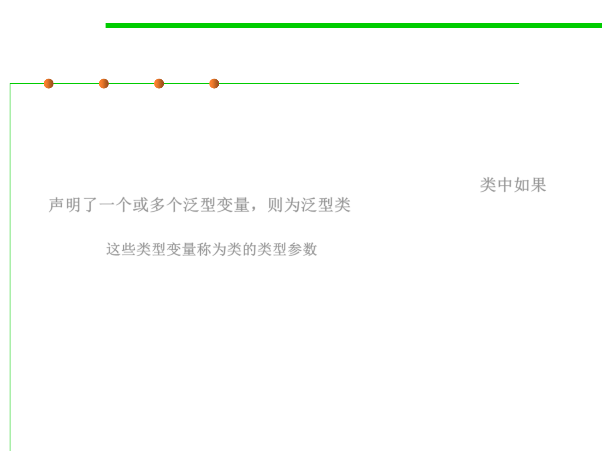
Generics in Java
3.4 Object-Oriented Programming (OOP)
▪ A type variable(类型变量) is an unqualified(无限制的) identifier.
– They are introduced by generic class declarations, generic interface
declarations, generic method declarations
▪ A class is generic if it declares one or more type variables. 类中如果
声明了一个或多个泛型变量，则为泛型类
– These type variables are known as the type parameters(类型参数) of the
class. 这些类型变量称为类的类型参数
– It defines one or more type variables that act as parameters.
– A generic class declaration defines a set of parameterized types, one for
each possible invocation of the type parameter section.
– All of these parameterized types share the same class at runtime.
class ClassName <T,E,…>{
private T var;
.....
}

3.4 Object-Oriented Programming (OOP)
Example public class PapersJar<T> {
private List<T> itemList = new ArrayList<>();
public void add(T item) {
itemList.add(item);
}
public T get(int index) {
return (T) itemList.get(index);
}
public static void main(String args[]) {
PapersJar<String> papersStr = new PapersJar<>();
papersStr.add("Lion");
String str = papersStr.get(0);
System.out.println(str);
PapersJar<Integer> papersInt = new PapersJar<>();
papersInt.add(new Integer(100));
Integer integerObj = papersInt.get(0);
System.out.println(integerObj);
}
}

Example
3.4 Object-Oriented Programming (OOP)
public class Pair<E> {
private final E first, second;
public Pair(E first, E second) {
this.first = first;
this.second = second;
}
public E first() { return first; }
public E second() { return second; }
}
Client:
Pair<String> p = new Pair<>("Hello", "world");
String result = p.first();

Generics in Java
3.4 Object-Oriented Programming (OOP)
▪ An interface is generic if it declares one or more type variables.
– These type variables are known as the type parameters of the interface.
– It defines one or more type variables that act as parameters.
– A generic interface declaration defines a set of types, one for each possible
invocation of the type parameter section.
– All parameterized types share the same interface at runtime.
Interface InterfaceName <T,E,…>{
public T methodName();
.....
}
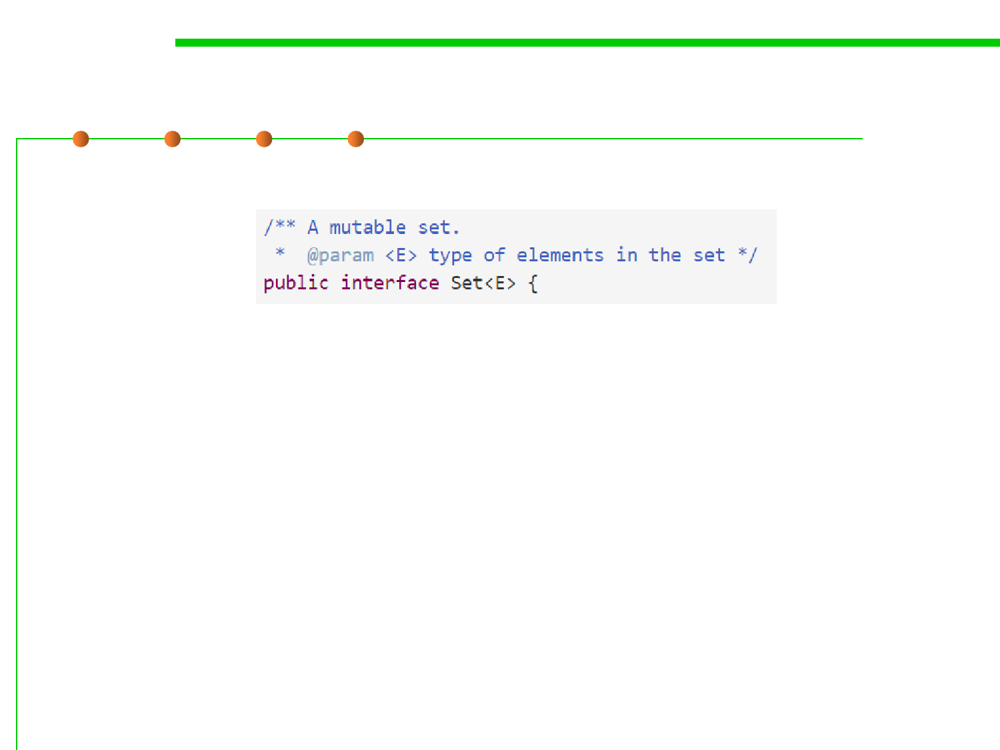
Another example: Java Set
3.4 Object-Oriented Programming (OOP)
▪ Set is the ADT of finite sets of elements of some other type E .
▪ Set is an example of a generic type : a type whose specification is
in terms of a placeholder type to be filled in later.
▪ Instead of writing separate specifications and implementations for
Set<String> , Set<Integer> , and so on, we design and
implement one Set<E> .
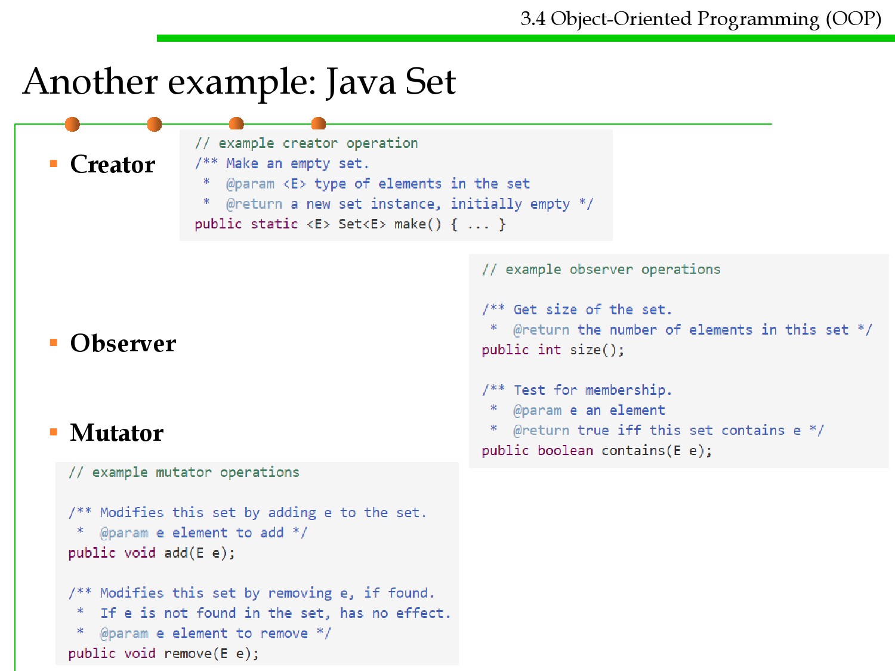
Another example: Java Set
▪ Creator
3.4 Object-Oriented Programming (OOP)
▪ Observer
▪ Mutator
Generic Interfaces
3.4 Object-Oriented Programming (OOP)
▪ Suppose we want to implement the generic Set<E> interface.
– Way 1: Generic interface, non-generic implementation: to implement
Set<E> for a particular type E .

Generic Interfaces
3.4 Object-Oriented Programming (OOP)
▪ Way 2: Generic interface, generic implementation.
– We can also implement the generic Set<E> interface without picking a
type for E .
– In that case, we write our code blind to the actual type that clients will
choose for E .
– Java’s HashSet does that for Set.
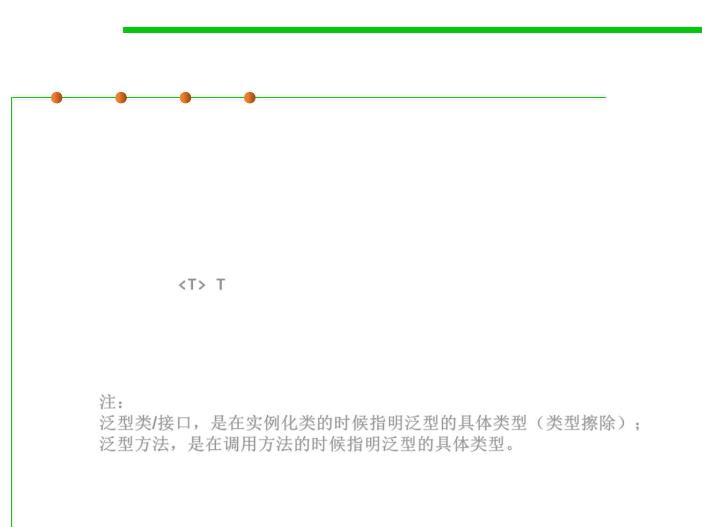
Generics in Java
3.4 Object-Oriented Programming (OOP)
▪ A method is generic if it declares one or more type variables.
– These type variables are known as the formal type parameters of the
method.
– The form of the formal type parameter list is identical to a type parameter
list of a class or interface.
public <T> T genericMethod(Class<T> tClass) {
T instance = tClass.newInstance();
return instance;
}
注：
泛型类/接口，是在实例化类的时候指明泛型的具体类型（类型擦除）；
泛型方法，是在调用方法的时候指明泛型的具体类型。
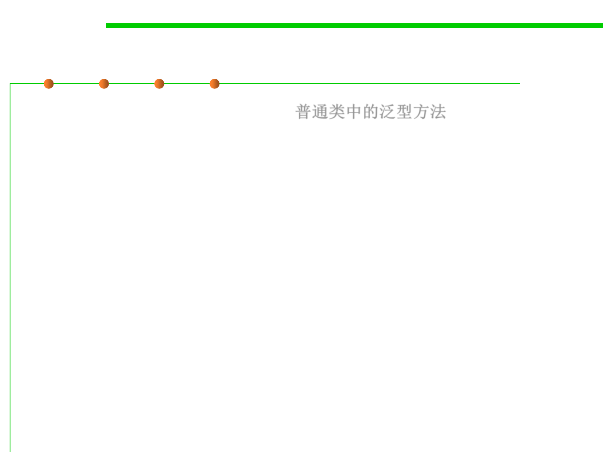
Generics in Java
3.4 Object-Oriented Programming (OOP)
▪ Generic method in normal class 普通类中的泛型方法
public class GenericTest {
public void normalMethod(…){ …}
public <T> T genericMethod(…){
T var;
….;
}
}
Generics in Java
3.4 Object-Oriented Programming (OOP)
▪ Generic method in generic class 泛型类中的泛型方法
class GenericTest<T>{
//下面的T同所在类的类型变量一致，show1不是泛型方法
public void show1(T t){
System.out.println(t.toString());
}
//下面的E是新的类型变量，只适用于此方法，show2是泛型方法
public <E> void show2(E t){
System.out.println(t.toString());
}
//下面的T是新的类型变量，同类的类型变量无关（即使名字一样）
//show3是泛型方法
public <T> void show3(T t){
System.out.println(t.toString());
}
}
 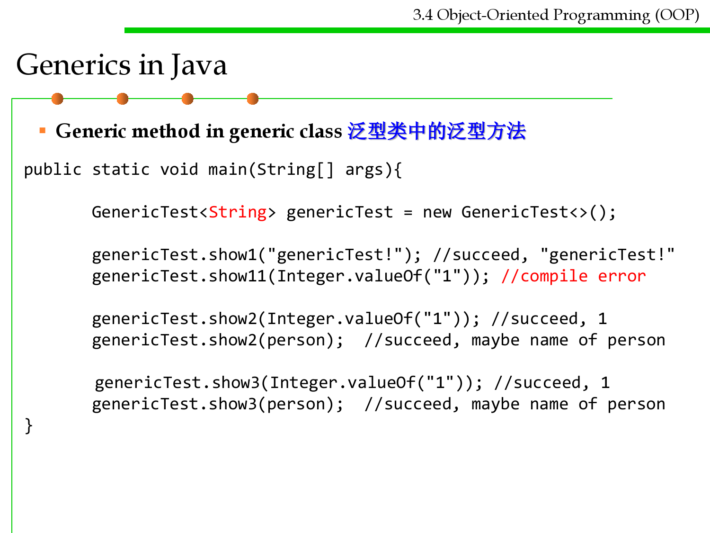
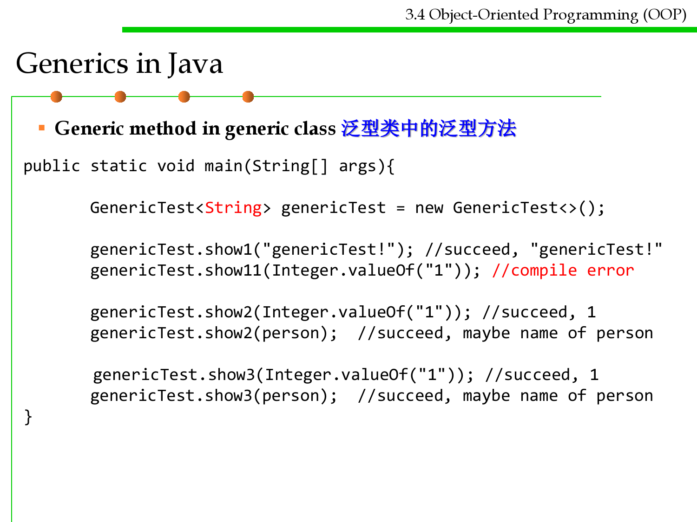
Generics in Java
3.4 Object-Oriented Programming (OOP)
▪ Generic method in generic class 泛型类中的泛型方法
public static void main(String[] args){
GenericTest<String> genericTest = new GenericTest<>();
genericTest.show1("genericTest!"); //succeed, "genericTest!"
genericTest.show11(Integer.valueOf("1")); //compile error
genericTest.show2(Integer.valueOf("1")); //succeed, 1
genericTest.show2(person); //succeed, maybe name of person
genericTest.show3(Integer.valueOf("1")); //succeed, 1
genericTest.show3(person); //succeed, maybe name of person
}

Generics in Java
3.4 Object-Oriented Programming (OOP)
▪ Generic method and static method
– Static method cannot use generic variable defined in class level. 静态方法
不能使用所在泛型类定义的泛型变量
– If static methods are to use generics, they must also be defined as generic
methods. 如果静态方法要使用泛型的话，必须将静态方法也定义成泛型方
法。
/**
* Create an empty graph.
*
* @param <L> type of vertex labels in the graph, must be immutable
* @return a new empty weighted directed graph
*/
public static <L> Graph<L> empty() {
……
}
Some Java Generics details
3.4 Object-Oriented Programming (OOP)
▪ Can have multiple type parameters
– e.g., Map<E, F>, Map<String, Integer>
▪ Wildcards(通配符)
– e.g. List<?> or List<? extends Animal> or List<? super Animal>
▪ Generics are type invariant Java中的泛型是不“型变”的
– ArrayList<String> is a subtype of List<String>
– List<String> is not a subtype of List<Object>
– List<String> is a subtype of List<? extends Object>
– List<Object> is a subtype of List<? super String>
▪ Generic type info is erased (i.e. compile-time only)
– Cannot use instanceof to check generic type
▪ Cannot create Generic arrays
– Pair<String>[] foo = new Pair<String>[42]; // won't compile

Software Construction
(4) Subtyping Polymorphism

Inheritance and subtyping
3.4 Object-Oriented Programming (OOP)
▪ Inheritance is for code reuse
– Write code once and only once
Class A extends B
– Superclass features implicitly available in subclass
▪ Subtyping is for polymorphism
Class A implements I
– Accessing objects the same way, but getting different behavior 采用同样的
方式访问对象，会得到不同的行为
– Subtype is substitutable for supertype
▪ An interface defines expectations / commitments for clients
▪ A class fulfills the expectations of an interface
– An abstract class is a convenient hybrid 抽象类是一种方便的混合(介于接
口和具体实现类之间
– A subclass specializes a class's implementation

Subtypes
3.4 Object-Oriented Programming (OOP)
▪ A type is a set of values. 一个类型代表了一组值
– The Java List type is defined by an interface. If we think about all possible
List values, none of them are List objects: we cannot create instances of an
interface.
– Instead, those values are all ArrayList objects, or LinkedList objects, or
objects of another class that implements List .
▪ A subtype is simply a subset of the supertype 子类型是超类型的子集
– ArrayList and LinkedList are subtypes of List .
Subtypes
3.4 Object-Oriented Programming (OOP)
▪ “B is a subtype of A” means “every B is an A.”
▪ In terms of specifications: “every B satisfies the specification for
A.”
– B is only a subtype of A if B’s specification is at least as strong as A’s
specification. B是A的子类型，当且仅当B的规格说明至少同A的一样强
– When we declare a class that implements an interface, the Java compiler
enforces part of this requirement automatically: it ensures that every
method in A appears in B, with a compatible type signature.
– Class B cannot implement interface A without implementing all of the
methods declared in A. 编译器会检查，确保接口中的所有方法在实现类中
均被实现

Static checking on subtypes
3.4 Object-Oriented Programming (OOP)
▪ But the compiler cannot check that we haven’t weakened the
specification in other ways: 但是规格说明的强弱，编译器无法判断
。以下的错误行为要避免：
– Strengthening the precondition on some inputs to a method
– Weakening a postcondition
– Weakening a guarantee that the interface abstract type advertises to
clients.
▪ If you declare a subtype in Java (e.g., implementing an interface),
then you must ensure that the subtype’s spec is at least as strong as
the supertype’s. Java中的子类型一定要确保其规格说明不弱于超类型
Variation in the real world
3.4 Object-Oriented Programming (OOP)
▪ Two types of “Bank Account”
3.4 Object-Oriented Programming (OOP)
Interface inheritance for an account type hierarchy
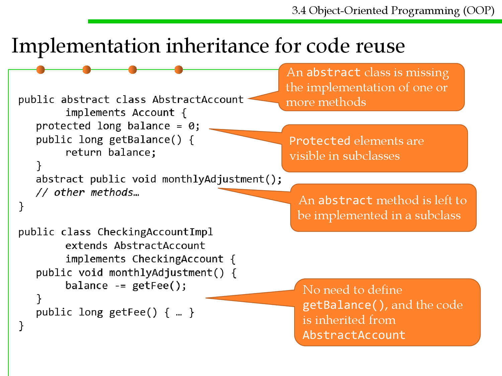
3.4 Object-Oriented Programming (OOP)
Implementation inheritance for code reuse
An abstract class is missing
the implementation of one or
more methods
Protected elements are
visible in subclasses
An abstract method is left to
be implemented in a subclass
No need to define
getBalance(), and the code
is inherited from
AbstractAccount

Subtype polymorphism
3.4 Object-Oriented Programming (OOP)
▪ Different kinds of objects can be treated uniformly by client code
客户端可以对不同类型的对象使用统一的方式进行处理(处理超类型)
▪ Each object behaves according to its type (e.g., if you add new kind
of account, client code does not change)
3.4 Object-Oriented Programming (OOP)
Inheritance and Subtype: a glimpse at the hierarchy
▪ Java Collections API
▪ Benefits of inheritance/subtype: Reuse of code, Modeling
flexibility
▪ In Java: Each class can directly extend only one parent class; A class
can implement multiple interfaces. Java只支持单继承，但支持多实现
Type casting 类型转换
3.4 Object-Oriented Programming (OOP)
▪ Sometimes you want a different type than you have
double pi = 3.14;
int indianaPi = (int) pi;
▪ Useful if you know you have a more specific subtype:
Account acct = …;
CheckingAccount checkingAcct = (CheckingAccount) acct;
long fee = checkingAcct.getFee();
▪ But it will get a ClassCastException if types are incompatible
▪ Advice:
– Avoid downcasting types 避免向下类型转换
– Never downcast within superclass to a subclass
instanceof
3.4 Object-Oriented Programming (OOP)
▪ Operator that tests whether an object is of a given class(instanceof
是操作符，不是方法)
▪ Advice: avoid instanceof if possible, and never use instanceof
in a superclass to check type against subclass. 尽可能避免用
instanceof，特别是在超类中检查某个对象是否是其子类的对象
▪ instanceof is disallowed anywhere except for implementing equals
除了在equals()方法中，不要使用instanceof，会带来类型不安全

3.4 Object-Oriented Programming (OOP)
Behavioral subtyping - discussed more in 5.2
▪ Let q(x) be a property provable about objects x of type T. Then q(y)
should be provable for objects y of type S where S is a subtype of T.
——Barbara Liskov
▪ Compiler-enforced rules in Java:
– Subtypes can add, but not remove methods
– Concrete class must implement all undefined methods
– Overriding method must return same type or subtype
– Overriding method must accept the same parameter types
– Overriding method may not throw additional exceptions
▪ Also applies to specified behavior:
Liskov
Substitution
– Same or stronger invariants
Principle
– Same or stronger postconditions for all methods
(LSP)
– Same or weaker preconditions for all methods

Software Construction
7 Dynamic dispatch

Dynamic dispatch动态分派
3.4 Object-Oriented Programming (OOP)
▪ Dynamic dispatch is the process of selecting which
implementation of a polymorphic operation (method or function)
to call at run time. 决定在运行时一个具有多态的操作，哪个具体实
现被选择执行
– Object-oriented systems model a problem as a set of interacting objects
that enact operations referred to by name.
– Polymorphism is the phenomenon wherein somewhat interchangeable
objects each expose an operation of the same name but possibly differing
in behavior.
Determining which method to call at
runtime, i.e., a call to an overridden or
polymorphic method is resolved at
runtime

Dynamic dispatch
3.4 Object-Oriented Programming (OOP)
▪ As an example, a File object and a Database object both have
a StoreRecord method that can be used to write a personnel record
to storage. Their implementations differ.
▪ A program holds a reference to an object which may be either
a File object or a Database object. Which it is may have been
determined by a run-time setting, and at this stage, the program
may not know or care which.
▪ When the program calls StoreRecord on the object, something
needs to decide which behavior gets enacted.
▪ The program sends a StoreRecord message to an object of
unknown type, leaving it to the run-time support system to
dispatch the message to the right object. The object enacts
whichever behavior it implements.

Dynamic dispatch
3.4 Object-Oriented Programming (OOP)
dividend.divide(divisor) # dividend / divisor
▪ This is thought of as sending a message named divide with
parameter divisor to dividend.
▪ An implementation will be chosen based only on dividend's type
(perhaps rational, floating point, matrix), disregarding the type or
value of divisor.
(基于dividend的类型选择具体实现，而不考虑divisor的值和类型)

Dynamic method dispatch
3.4 Object-Oriented Programming (OOP)
1. (Compile time) Determine which class to look in
2. (Compile time) Determine method signature to be executed
– Find all accessible, applicable methods
– Select most specific matching method
3. (Run time) Determine dynamic class of the receiver
4. (Run time) From dynamic class, locate method to invoke
– Look for method with the same signature found in step 2
– Otherwise search in superclass and etc.
Example
3.4 Object-Oriented Programming (OOP)
class Game {
public void type(){
System.out.println("Indoor & outdoor"); }
}
Class Cricket extends Game {
public void type() {
System.out.println("outdoor game"); }
public static void main(String[] args) {
Game gm = new Game();
Cricket ck = new Cricket();
gm.type();
Upcasting: a
Parent class
variable refers to
Child class object
ck.type();
gm=ck;
//gm refers to Cricket object
gm.type(); //calls Cricket's version of type
}
}

Software Construction
8 Delegation and composition
（will be discussed in 5.2）

Software Construction
9 Some important Object methods
in Java
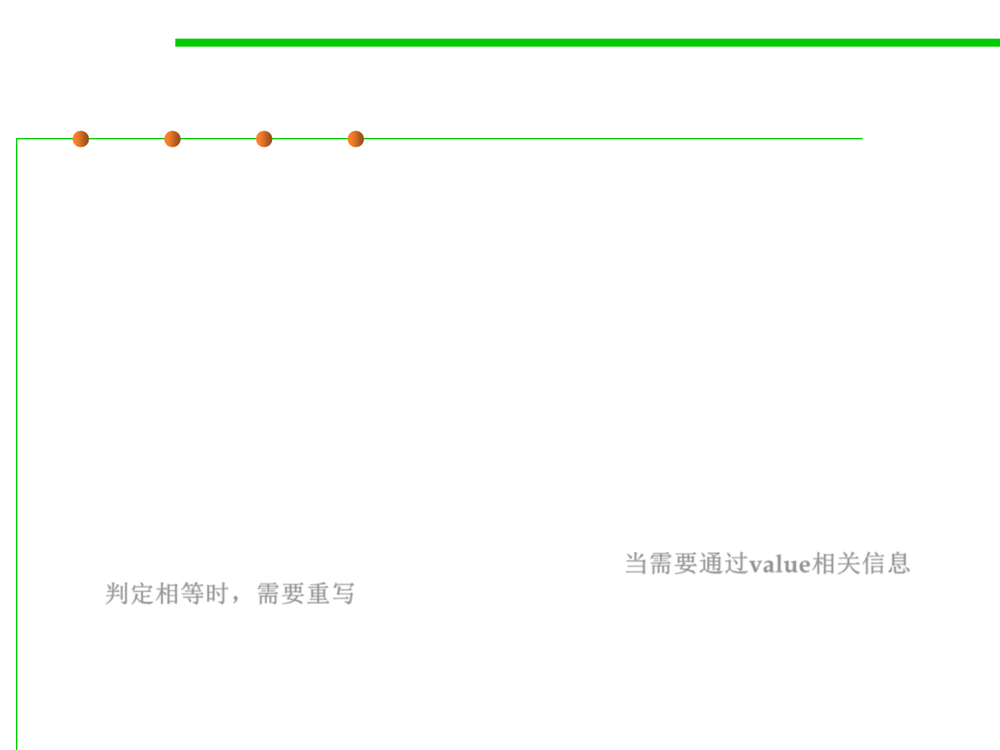
3.4 Object-Oriented Programming (OOP)
Overriding Object methods
▪ equals() – true if the two objects are “equal”
▪ hashCode() – a hash code for use in hash maps
▪ toString() – a printable string representation
▪ toString() – ugly and uninformative
– You know what your object is so you can do better
– Always override unless you know it won’t be called
▪ equals & hashCode – identity semantics see 3.5
– You must override if you want value semantics 当需要通过value相关信息
判定相等时，需要重写
– Otherwise don’t

Overriding toString()
3.4 Object-Oriented Programming (OOP)
▪ toString() – ugly and uninformative
– You know what your object is so you can do better
– Always override unless you know it won’t be called
public class PhoneNumber {
private final short areaCode;
private final short prefix;
private final short lineNumber;
...
}
System.out.println(pn);
//it will call the toString() in object class
//the result maybe is like “PhoneNumber@70dea4e”
Overriding toString()
3.4 Object-Oriented Programming (OOP)

Software Construction
10 Recall: Mutable and immutable
classes (and defensive copying)

Invariants of a class
3.4 Object-Oriented Programming (OOP)
▪ Class invariants are critical properties of the fields of an object
– Established by the constructor
– Maintained by public method invocations, and may be invalidated
temporarily during method execution.
▪ Immutable classes: Class whose instances cannot be modified
– Examples: String, Integer, BigInteger
– How, why, and when to use them
3.4 Object-Oriented Programming (OOP)
Immutability as a type of Invariants
▪ How do we guarantee that these Tweet objects are immutable – that,
once a tweet is created, its author, message, and date can never be
changed?

It’s mutable…
3.4 Object-Oriented Programming (OOP)
▪ The first threat to immutability comes from the fact that clients can
— in fact must — directly access its fields. So nothing’s stopping us
from writing code like this:
▪ What’s the effect of this code?
▪ This is a trivial example of representation exposure , meaning that
code outside the class can modify the representation directly.
▪ Rep exposure like this threatens not only invariants, but also
representation independence. 表示泄露会威胁不变性和表示独立性
▪ We can’t change the implementation of Tweet without affecting all
the clients who are directly accessing those fields. 无法在不影响客户
端的情况下，修改具体实现

To make it immutable…
▪ The private and public
keywords indicate which fields
and methods are accessible
only within the class and which
can be accessed from outside
the class.
▪ The final keyword also helps
by guaranteeing that the fields
of this immutable type won’t
be reassigned after the object is
constructed.
3.4 Object-Oriented Programming (OOP)
How about this …
▪ What’s the effect of this code?
3.4 Object-Oriented Programming (OOP)
▪ retweetLater() takes a tweet and should return another tweet
with the same message (called a retweet ) but sent an hour later.
▪ The retweetLater() method might be part of a system that
automatically echoes funny things that Twitter celebrities say.
What’s the problem?
3.4 Object-Oriented Programming (OOP)
▪ What’s the problem here?
– The getTimestamp call returns a reference to
the same Date object referenced by tweet t .
t.timestamp and d are aliases to the same
mutable object.
– So when that date object is mutated by d.setHours() , this affects the date
in t as well, as shown in the snapshot diagram.
▪ Tweet ’s immutability invariant has been broken.
▪ The problem is that Tweet leaked out a reference to a mutable
object that its immutability depended on.
▪ We exposed the rep, in such a way that Tweet can no longer
guarantee that its objects are immutable.
▪ Perfectly reasonable client code created a subtle bug.
3.4 Object-Oriented Programming (OOP)
How to solve it? --- Defensive copying
▪ We can patch this kind of rep exposure by using defensive copying:
making a copy of a mutable object to avoid leaking out references to
the rep.
▪ Defensive copying is an approach of defensive programming
– Assume clients will try to destroy invariants --- May actually be true
(malicious hackers), but more likely, honest mistakes
– Ensure class invariants survive any inputs, to minimize mutability
– See 7.3
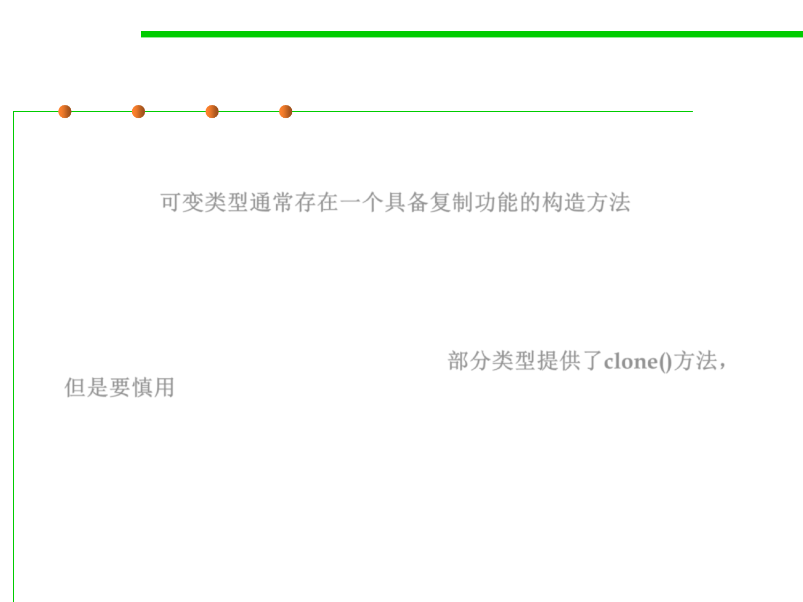
Copy and Clone()
3.4 Object-Oriented Programming (OOP)
▪ Mutable types often have a copy constructor that allows you to
make a new instance that duplicates the value of an existing
instance. 可变类型通常存在一个具备复制功能的构造方法
– In this case, Date ’s copy constructor uses the timestamp value, measured
in milliseconds since January 1, 1970.
– As another example, StringBuilder ’s copy constructor takes a String .
▪ Another way to copy a mutable object is clone() , which is
supported by some types but not all. 部分类型提供了clone()方法，
但是要慎用

Still rep exposure…
3.4 Object-Oriented Programming (OOP)
▪ What’s the side-effect of this code?
▪ The constructor of Tweet saves the reference
that was passed in, so all 24 Tweet objects
end up with the same time.
3.4 Object-Oriented Programming (OOP)
How to solve it? --- Again, defensive copying
▪ In general, you should carefully inspect the argument types and
return types of all your ADT operations. If any of the types are
mutable, make sure your implementation doesn’t return direct
references to its representation. 避免在输入参数和返回值中出现表示
泄露问题
▪ Doing that creates rep exposure.
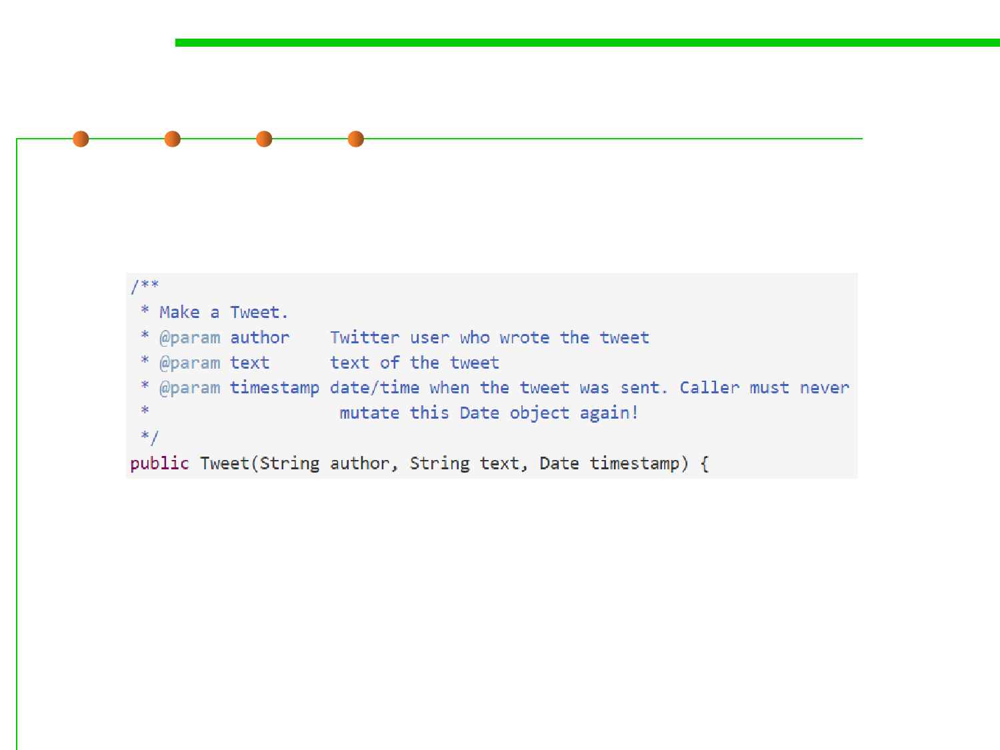
3.4 Object-Oriented Programming (OOP)
Leave the responsibility to your clients?
▪ You may object that this seems wasteful. Why make all these copies
of dates? Why can’t we just solve this problem by a carefully written
specification, like this?
▪ Yes, it works, but the cost in your ability to reason about the
program, and your ability to avoid bugs, is enormous.
▪ In the absence of compelling arguments to the contrary, it’s almost
always worth it for an abstract data type to guarantee its own
invariants, and preventing rep exposure is essential to that.
3.4 Object-Oriented Programming (OOP)
Another example about mutable Date
▪ How about this code?
How to solve it?
▪ By defensive copying
3.4 Object-Oriented Programming (OOP)
▪ How about this code?
▪ To solve it?

3.4 Object-Oriented Programming (OOP)
To use immutable types, it’s better!
▪ An even better solution is to prefer immutable types.
▪ If we had used an immutable date object, like
java.time.ZonedDateTime, instead of the mutable
java.util.Date, then these potential bugs would have disappeared
and no further rep exposure would have been possible.

3.4 Object-Oriented Programming (OOP)
Immutable Wrappers around Mutable Data Types
▪ The Java collections classes offer an interesting compromise:
immutable wrappers.
– Collections.unmodifiableList() takes a (mutable) List and wraps it
with an object that looks like a List , but whose mutators are disabled –
set() , add() , remove() , etc. throw exceptions. So you can construct a
list using mutators, then seal it up in an unmodifiable wrapper (and throw
away your reference to the original mutable list, as discussed in Mutability
& Immutability ), and get an immutable list.
▪ The downside here is that you get immutability at runtime, but not
at compile time. Java won’t warn you at compile time if you try to
sort() this unmodifiable list. You’ll just get an exception at
runtime. But that’s still better than nothing, so using unmodifiable
lists, maps, and sets can be a very good way to reduce the risk of
bugs. 注意:可变类型的不可变包装形式只在运行时生效，编译时无法
检查。

Summary
3.4 Object-Oriented Programming (OOP)
▪ Don’t incorporate mutable parameters into object; make defensive
copies
▪ Return defensive copies of mutable fields…
– Return new instance instead of modifying
▪ Or return unmodifiable view of mutable fields
▪ Real lesson – use immutable components, to eliminate the need for
defensive copying

3.4 Object-Oriented Programming (OOP)
How to write an immutable class
▪ Don’t provide any mutators
▪ Ensure that no methods may be overridden
▪ Make all fields final
▪ Make all fields private
▪ Ensure security of any mutable components
Immutable class example
3.4 Object-Oriented Programming (OOP)
Immutable class example
3.4 Object-Oriented Programming (OOP)

3.4 Object-Oriented Programming (OOP)
Advantages of immutable classes
▪ Simplicity
▪ Inherently Thread-Safe
▪ Can be shared freely
▪ No need for defensive copies
▪ Excellent building blocks

3.4 Object-Oriented Programming (OOP)
When to make classes immutable
▪ Always, unless there's a good reason not to
▪ Always make small “value classes” immutable!
– Examples: Color, PhoneNumber, Unit
– Date and Point were mistakes!
– Experts often use long instead of Date
3.4 Object-Oriented Programming (OOP)
When to make classes mutable
▪ Class represents entity whose state changes
– Real-world - BankAccount, TrafficLight
– Abstract - Iterator, Matcher, Collection
– Process classes - Thread, Timer
▪ If class must be mutable, minimize mutability
– Constructors should fully initialize instance 构造方法在初始化时，尽可能
的完成数据的初始化设置
– Avoid reinitialize methods 避免可以重新初始化的方法
 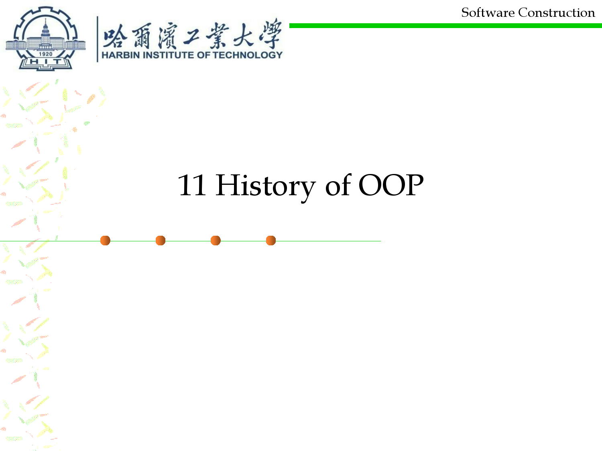
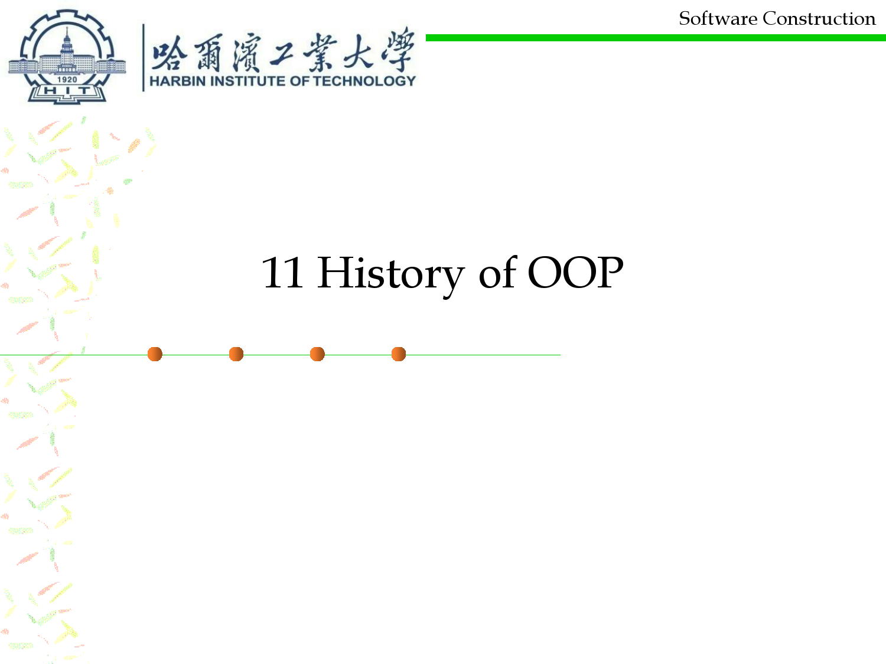
Software Construction
11 History of OOP

3.4 Object-Oriented Programming (OOP)
Simulation and the origins of OO programming
▪ 1960s: Simula 67 was the first object-oriented language developed by
Kristin Nygaard and Ole-Johan Dahl at the Norwegian Computing
Center, to support discrete-event simulation. (Class, object, inheritance,
etc)
▪ The term "object oriented programming (OOP) " was first used by
Xerox PARC in their Smalltalk language.
▪ 1980s: OOP had become prominent, and the primary factor in this is
C++.
▪ Niklaus Wirth for modular programming and data abstraction, with
Oberon and Modula-2;
▪ Eiffel and Java
3.4 Object-Oriented Programming (OOP)
History of OOP languanges


Software Construction
Summary

Summary of Interface
3.4 Object-Oriented Programming (OOP)
▪ Safe from bugs. An ADT is defined by its operations, and interfaces
do just that. When clients use an interface type, static checking
ensures that they only use methods defined by the interface. If the
implementation class exposes other methods — or worse, has visible
representation — the client can’t accidentally see or depend on them.
When we have multiple implementations of a data type, interfaces
provide static checking of the method signatures.
▪ Easy to understand. Clients and maintainers know exactly where to
look for the specification of the ADT. Since the interface doesn’t
contain instance fields or implementations of instance methods, it’s
easier to keep details of the implementation out of the specifications.
▪ Ready for change. We can easily add new implementations of a type
by adding classes that implement interface. If we avoid constructors
in favor of static factory methods, clients will only see the interface.
That means we can switch which implementation class clients are
using without changing their code at all.

Software Construction
The end
April 3, 2019